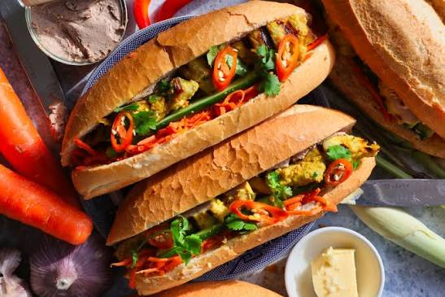
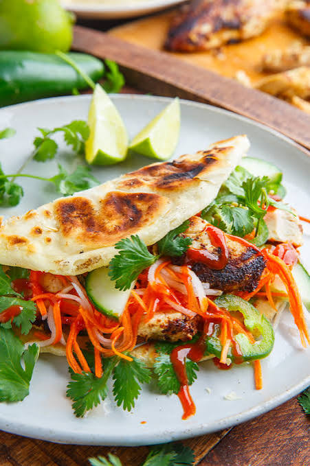
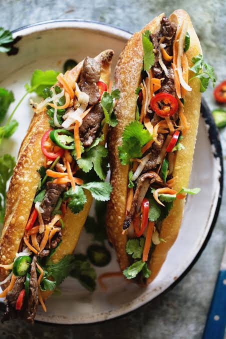

Greg’s Banh Mi
At Greg’s Banh Mi, we’re serving up the perfect marriage of French and Vietnamese culinary traditions—crispy-on-the-outside, pillowy-on-the-inside baguettes loaded with bold, fresh flavours that'll make your taste buds sing.

Classic Pork Banh Mi
Tender marinated pork topped with crisp pickled vegetables, fresh cilantro, and a smear of pâté on a perfectly crusty baguette. A traditional favorite that balances savory, sweet, and tangy flavors in every bite.

Lemongrass Chicken Banh Mi
Grilled chicken marinated in fragrant lemongrass and garlic, paired with cucumber, jalapeños, and our house mayo. Light yet satisfying, this sandwich brings bright, aromatic flavors that'll transport you straight to Saigon.
Tofu Banh Mi
Crispy pan-fried tofu glazed in sweet soy sauce, layered with daikon, carrots, and fresh herbs for a vegetarian delight. Proof that plant-based can be just as bold and craveable as any meat-filled sandwich.

Five-Spice Beef Banh Mi
Thinly sliced beef seared with aromatic five-spice blend and served with pickled vegetables and spicy Sriracha mayo. Rich, warming spices meet cool, crunchy toppings for an unforgettable flavor experience.